Contributors: Aiden Kim and Soyee Park | Tools: Figma
Doyle is a web-based platform that helps improve communication
between designers and developers during product hand-off. There are two parts to this case study that I self-led:
Part 1: End-to-end process
Part 2: Design system
Final deliverable
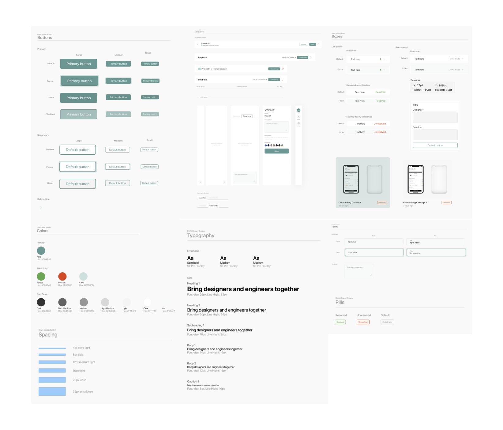
Part 1: End-to-end process
Research
In our discovery phase, we conducted user interviews with designers and developers
who had experience working together building and shipping products.
Through these interviews, we wanted to understand users'
key pain-points and also the root of the problem space.
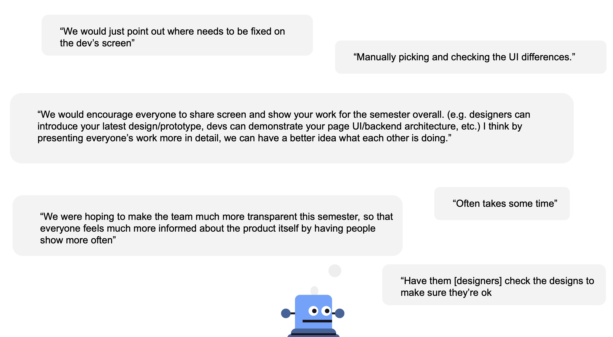
Key insights
There is no standard hand-off process for designers and developers causing inefficiency
There is no way to subjectively compare developer’s work and designs accurately: The checking process is manual and prone to errors
Designers and developers experience lack of cross communication during handoff: One hand-off meeting is not enough
User Needs
After our user interviews we identified user needs for two different stakeholders:
Designers needs: I expect my designs to be implemented as
documented but inconsistencies occur because the development process is not transparent with developers
Developers needs: I want an efficient way to compare and communicate my work with designers
but I can’t do that well because the checking process is manual and tedious
User Journey
We then mapped out the user journey of our personas to create a holistic design solution.
We re-evaluated our design goals and scope of the problem space.
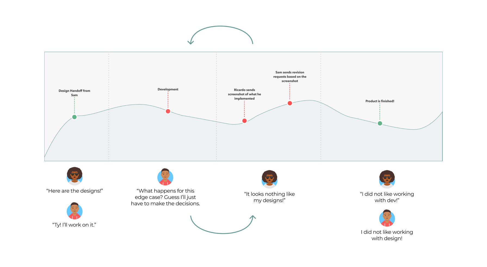
Define
Problem statement: Designers and developers want to be transparent and clear during hand-off
but they can’t do that well because there is no standard process to communicate and compare product development
Design goals
Allow designers and developers to analyze and compare their works directly
Provide clear feedback on differences between designers and developers work
Keep track of product development cycle after hand-off
Foster communication to resolve issues both synchronously and asynchronously
User flow
Based on our design goals we iterated on the most seamless user flow.
After we arrived at our final user flow, my partner and I divided the project to design parts of the end-to-end journey.
I focused on the second half of the user flow.
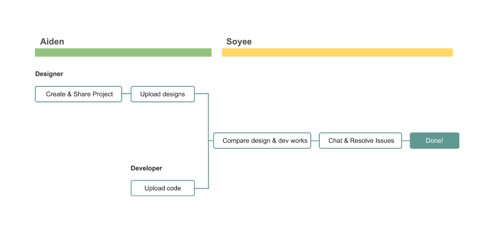
Design
Here are some examples of the low-fidelity, mid-fidelity, and high-fidelity explorations I did before putting together our final prototype.
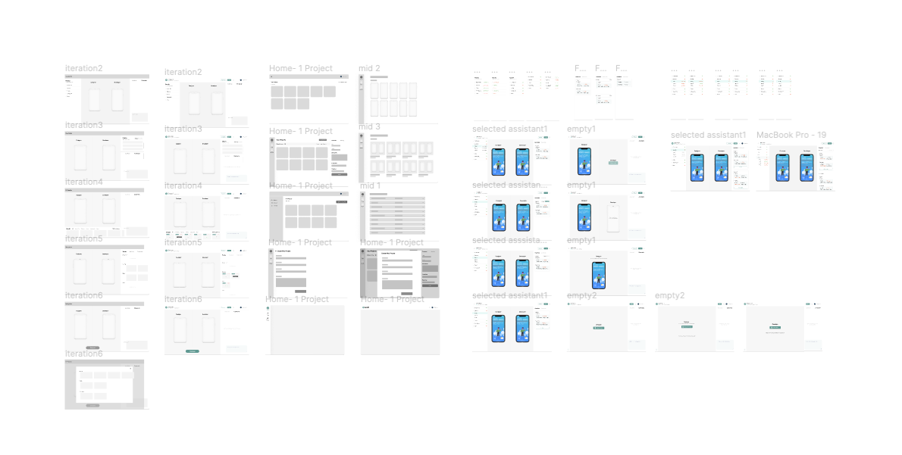
Final prototype
Empty state & comments
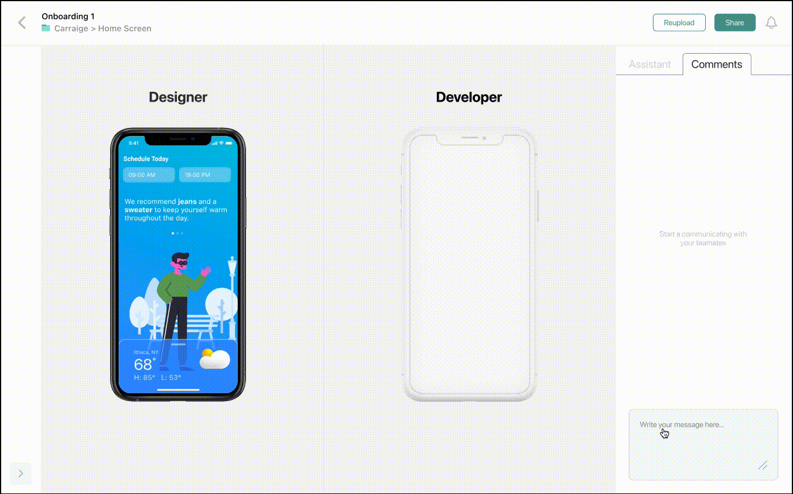
Sub-tasks for unresolved issues
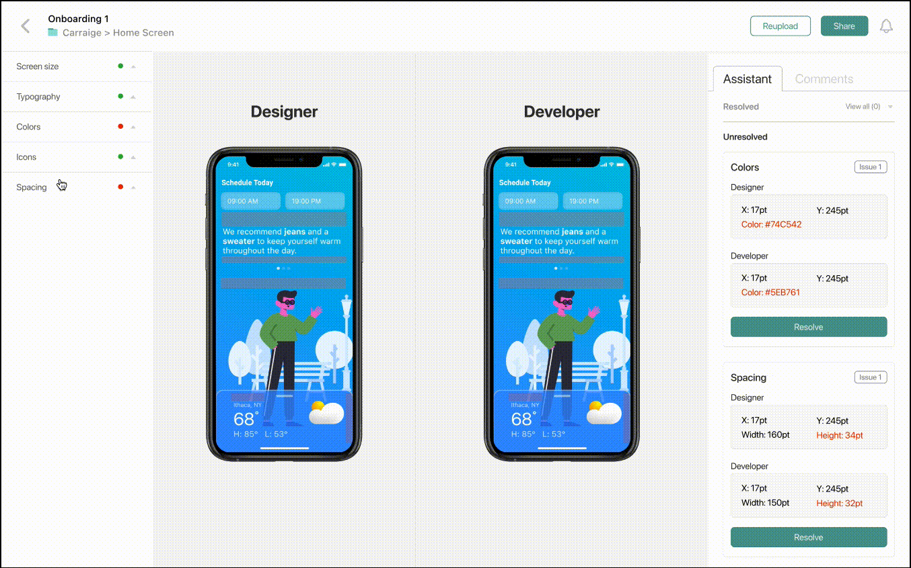
Resolving issues
Unresolving issues
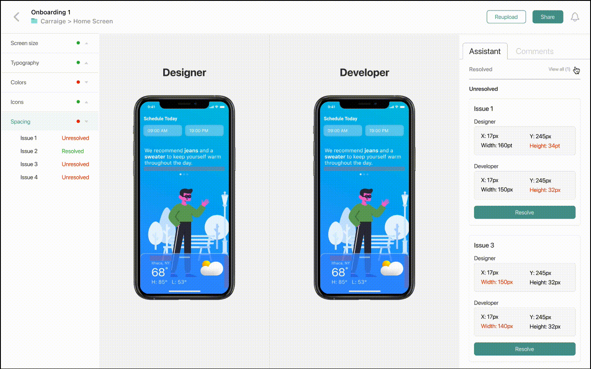
Part 2: Design system
Research
Before auditing and reflecting on my own design components, I kicked off this project by looking at other successful design
systems to understand what makes it successful.
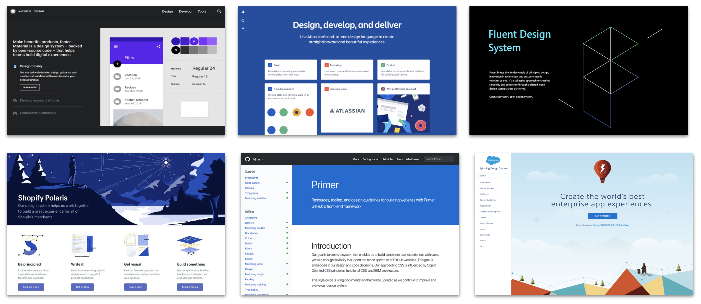
Key insights
Small details create meaningful changes to the design language as a whole
Prioritize consistency and simplicity when creating scalable designs
Facilitate collaboration between developers and designers
Never trade off accessibility over usability and visual design
Learn from different patterns and value QA to understand its the systems breadth and scalability
Define
Problem statement: Undefined design language creates inefficiency, insecurity and inconsistency for developers and designers
Opportunity area: How might we create a consistent design language that is accessible, scalable, and transparent?
Success metrics: KPIs
Adoption: Count of CSS classes, component names, or imports over time
Coverage: Lower count of deprecated components is better
Audit
I went through all visual components to understand each component's similarities and differences.
Through reflecting on my own designs, I was able to understand inconsistencies across the system.
Take for instance the different types of buttons used before a design system:
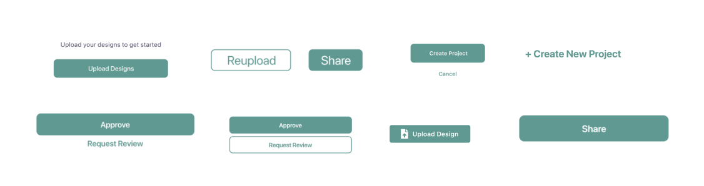
Other inconsistencies
Accessibility: color contrast, touch target, font size, etc.
Interaction patterns: hover states, modules, etc.
Visual design: spacing, iconography, colors, etc.
Content: tone, CTAs, etc.
Process
After my audit, I converged on one component for every pattern.
I focused on meeting accessibility standards by paying close attention to different web states and also color contrast.
Take for instance this example on forms. Before the design system, the form fields were inaccessible
because they had undefined borders, low color contrast, disappearing field labels, and no focus or hover states.
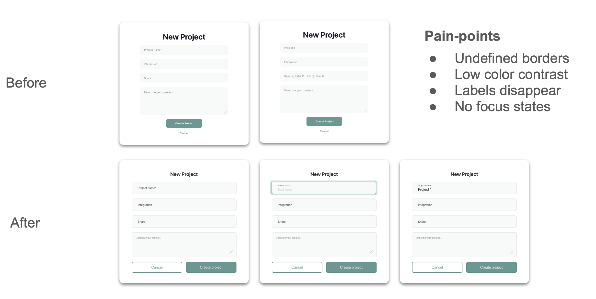
I made sure all text and images had a color contrast ratio of at least 4.5:1 for all components in the design system.